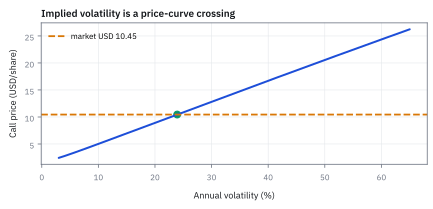
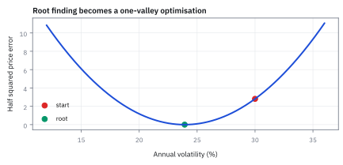
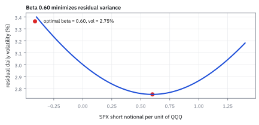

8.7 Algorithms in Practice — Gradient Descent and Newton's Method
เลือกก้าวลงเขาให้เร็วโดยไม่หลุดทาง
หาแอ่งต่ำในห้องมืด วิธีแรกคลำพื้นแล้วก้าวลงทีละน้อย; อีกวิธีส่องไฟดูความโค้งแล้วเดาตำแหน่งก้นแอ่ง วิธีหลังเร็วกว่าเสมอไหม?
เฉลย: ไม่เสมอ; ถ้าพื้นเกือบเป็นชาม การดูความโค้งพาไปก้นหลุมไกลได้; ถ้าพื้นขรุขระ การก้าวใหญ่ผิดทิศอาจตกหลุมอื่น
gradient descent ใช้ทิศลงจาก gradient ส่วน Newton's method ใช้ Hessian เพิ่มข้อมูลความโค้งเพื่อเลือกก้าวและลด objective
Newton ใช้แผนที่ท้องถิ่น จึงต้องมี line search, damping และหลายจุดเริ่มเพื่อลดการหลงทาง
ศัพท์ที่ใช้ในหัวข้อนี้
- implied volatility
- ค่า volatility ที่ทำให้ option-pricing model ให้ราคาตรงกับราคาตลาด ใช้แปลงราคา option เป็นหน่วยความผันผวนที่เปรียบเทียบกันได้
- gradient descent
- วิธีอัปเดตตัวแปรสวนทาง gradient ด้วย step size ที่กำหนด ใช้ลด objective ทีละรอบเมื่อปัญหามีหลายตัวแปร
- Newton's method
- วิธีใช้ derivative และ curvature เพื่อคำนวณก้าวใหม่ ใช้หารากหรือ optimize ได้เร็วเมื่อเริ่มใกล้คำตอบ
- learning rate
- ขนาดตัวคูณของก้าวใน gradient descent ใช้ควบคุมความเร็วและการเข้าใกล้คำตอบ (convergence) อย่างเสถียร
- vega
- derivative ของ option price เทียบ volatility decimal ใช้แปลง price error เป็น volatility correction
- line search
- ขั้นตอนทดลองลดขนาดก้าวจน objective ดีขึ้น ใช้ป้องกันการกระโดดแรงเกินบนพื้นผิวที่ curvature เปลี่ยน
- root finding
- งานหาค่าตัวแปรที่ทำให้ function เท่าศูนย์ ใช้หา implied parameter จากราคาตลาด
- underlying
- สินทรัพย์ที่ option อ้างอิงและรับผลจากราคา ใช้เป็นตัวตั้งต้นของ payoff กับ model price
- strike
- ราคาที่ option contract กำหนดให้ซื้อหรือขายได้ ใช้กำหนด moneyness และ payoff
- expiry
- วันสิ้นสุดสิทธิ์ของ option ใช้คำนวณเวลาคงเหลือและ discounting ในราคา
- moneyness
- ตำแหน่งของ spot เทียบ strike ใช้บอกว่า option อยู่ใกล้หรือไกลจากการมี intrinsic value
- no-arbitrage
- เงื่อนไขราคาที่ไม่เปิดกำไรไร้ความเสี่ยงจากการซื้อขายพร้อมกัน ใช้ตรวจ quote ก่อนหา implied volatility
- arbitrage
- ชุดธุรกรรมที่ไม่ใช้เงินสุทธิแต่รับกำไรแน่นอนภายใต้สมมติฐาน ใช้ระบุราคาที่ขัดกันใน model
- bid price
- ราคาสูงสุดที่ผู้ซื้อพร้อมจ่าย ใช้เป็นขอบล่างของ executable option quote
- ask price
- ราคาต่ำสุดที่ผู้ขายพร้อมรับ ใช้เป็นขอบบนของ executable option quote
สัญลักษณ์ที่ใช้ในหัวข้อนี้
| สัญลักษณ์ | ความหมาย | หน่วย |
|---|---|---|
| $S,K$ | underlying price และ strike ของ call | USD per share |
| $T$ | เวลาถึง expiry | years |
| $r$ | continuously compounded risk-free rate | decimal ต่อปี |
| $\sigma$ | annual volatility ที่กำลังหา | decimal ต่อรากปี |
| $C(\sigma),C_{mkt}$ | model call price และ market call price | USD per share |
| $\eta$ | learning rate | volatility² หารด้วย USD² ใน objective นี้ |
| $k$ | iteration index | count |
เริ่มด้วยโจทย์ที่ไม่ต้องรู้เรื่อง option
อยากหา $x>0$ ที่ทำให้ $x^2=4$ คำตอบคือ 2 แต่ลองแกล้งไม่รู้แล้วเริ่มที่ $x_0=3$ เราใช้โจทย์นี้ดูว่าแต่ละ algorithm เลือกก้าวอย่างไร จากนั้นค่อยใช้หลักเดียวกันกับตัวอย่างราคาสัญญา ซึ่งสูตรราคาจะพิสูจน์ในบทที่ 13
ที่มาของ Newton's Method และ Gradient Descent: จากการโคจรของดวงดาวสู่งาน Quant
Isaac Newton ในปี 1669 และ Joseph Raphson ในปี 1690 คิดค้นกระบวนการหารากสมการพีชคณิตที่ไม่มีสูตรสำเร็จ ขณะที่ Augustin-Louis Cauchy เสนอวิธี Gradient Descent ในปี 1847 เพื่อแก้ปัญหาการคำนวณวงโคจรทางดาราศาสตร์ที่ซับซ้อน ทั้งสองวิธีเกิดขึ้นเพื่อแทนที่การลองผิดลองถูกและการแบ่งครึ่งช่วง (bisection) ที่เชื่องช้าเกินกว่าจะนำไปใช้งานจริง
ในโลกการเงินเชิงปริมาณ สูตร Black–Scholes (สร้างในบทที่ 13) ไม่สามารถถอดสมการกลับเพื่อหา implied volatility ออกมาเป็นสูตรปิดทางพีชคณิตได้ตามข้อจำกัดของทฤษฎีทางคณิตศาสตร์ เมื่อระบบเทรดและฝ่ายบริหารความเสี่ยงต้องคำนวณค่านี้ซ้ำนับหมื่นครั้งต่อวินาที วิธีทางตัวเลขอย่าง Newton's method และ Gradient Descent จึงกลายเป็นเครื่องยนต์หลักที่ขับเคลื่อนโต๊ะเทรดออปชันทั่วโลก
ลองสองก้าวด้วยกำลังสองธรรมดา
กำหนด $g(x)=x^2-4$ และ $f(x)=g(x)^2/2$ หาderivativeด้วย chain rule ได้ $g^{\prime}(x)=2x$ และ $f^{\prime}(x)=g(x)g^{\prime}(x)$
Gradient descent เลือกอัตราก้าว $0.02$ แล้วลบความชันของ loss คูณอัตรานั้น ส่วน Newton หารค่าที่ยังเกินเป้าด้วยความชันของ $g$ จึงเลื่อนประมาณ 0.8333 ตรวจผลได้ $2.4^2-4=1.76$ และ $2.1667^2-4\approx0.6946$ ทั้งสองลดส่วนต่างในก้าวนี้ แต่ไม่มีข้อรับรองว่าก้าวเต็มจะดีสำหรับทุก function
Worked Example — โจทย์และสิ่งที่ให้มา
โจทย์ให้อะไรมาบ้าง: ลองใช้ price function ของสิทธิ์ที่ไม่จ่าย dividend โดยใส่ spot 100 USD, strike 100 USD, อายุหนึ่งปี, annual risk-free rate 2% และราคาตลาด 10.45 USD ต่อหุ้น ตัวเลขนี้เป็นภาพสมมติสำหรับฝึก algorithm ของจริงยังต้องใส่ dividend, early exercise และผลของ bid–ask ให้ตรงกับสัญญา
ขั้นที่ 1 — ที่มาของ Newton's Step: จาก Taylor Expansion สู่ Quadratic Model
เจ็ดบรรทัดนี้แสดงสะพานเชื่อมระหว่างการหาจุดต่ำสุดของ loss กำลังสองกับการหารากสมการราคา เมื่อตัดพจน์ derivative อันดับสองที่ไม่สำคัญออก Newton optimization จะยุบตัวลงกลายเป็น Newton-Raphson root finding โดยสมบูรณ์
Newton's method ในการหาจุดต่ำสุดมอง function ใกล้เคียงเป็นชามพาราโบลา โดยตัด Taylor series ไว้ที่กำลังสอง แล้วกระโดดตรงไปยังจุดต่ำสุดของชามจำลองนั้นทันที
เมื่อหา derivative ของแบบจำลองกำลังสองเทียบกับระยะก้าว $p$ แล้วจับเท่ากับศูนย์ เราจะได้สมการที่คูณกลับด้วย inverse ของ Hessian ซึ่งจะชี้ทิศทางและระยะก้าวที่เหมาะสมโดยอัตโนมัติ
เมื่อนำมาใช้กับ loss กำลังสองของการหาราคาออปชัน พจน์ derivative อันดับสองจะมีค่าประมาณ vega กำลังสอง การหาร gradient ด้วยความโค้งจึงตัดทอนเหลือเพียงผลต่างราคาส่วนด้วย vega ตรงกับสูตรหารากสมการของ Newton พอดี
ขั้นที่ 2 — เปลี่ยน quote เป็น root และ loss
ปัญหา "หา volatility ที่ทำให้ราคาตรงกับตลาด" เขียนได้สองแบบ แบบหาค่าที่ทำให้ส่วนต่างเป็นศูนย์ กับแบบหาค่าที่ทำให้ส่วนต่างกำลังสองน้อยที่สุด สองแบบนี้นำไปสู่วิธีเดินคนละวิธี
root formulation หาค่า $\sigma$ ที่ price residual เป็น zero ส่วน optimisation formulation ยก residual เป็น loss ไม่ติดลบและมี minimum ที่จุดเดียวกัน
ขั้นที่ 3 — ของที่ยกมาจากหัวข้อ 13.2 และ 13.3: สูตรราคาและ vega
สี่ก้อนนี้เป็น ของที่ให้มา จากหัวข้อ 13.2 และ 13.3 ซึ่งพิสูจน์ครบอยู่ที่นั่น หัวข้อนี้ไม่ได้สร้างมันขึ้นใหม่ และวิธี Newton ก็ไม่ได้เป็นที่มาของสูตรราคา ถ้ายังไม่ได้อ่านสองหัวข้อนั้น ให้ใช้ตัวอย่าง $x^{2}=4$ ด้านบนเพื่อเข้าใจ algorithm ก่อน แล้วค่อยกลับมาดูว่ามันทำงานกับสูตรจริงอย่างไร
$\Phi$ และ $\phi$ คือ cumulative distribution และ density ของ standard normal; vega $\mathcal V$ เป็น derivative ของราคาเทียบ annual volatility decimal
ขั้นที่ 4 — คำนวณที่จุดเริ่ม 30%
แทน spot 100, strike 100, อายุ 1 ปี, rate 2% และเดา volatility เริ่มต้นที่ 30% ลงในสูตรของขั้นก่อนหน้า ทีละบรรทัด
$\ln(100/100)=0$ เพราะ spot เท่ากับ strike พอดี เหลือแค่ $0.02+0.045=0.065$ ส่วนด้วย $0.30$
ราคาที่ volatility 30% สูงกว่าราคาตลาด 10.45 อยู่ 2.371581 แปลว่าเราเดา volatility สูงเกินไป ต้องปรับลง
$\Phi(0.216667)=0.585766$ และ $\Phi(-0.083333)=0.466793$ อ่านจากตาราง standard normal หรือ norm.cdf เหมือนหัวข้อ 1.9 ส่วน $e^{-0.02}=0.980199$ คือตัวคูณที่ย้ายเงินหนึ่งปีข้างหน้ามาเป็นค่าวันนี้ (หัวข้อ 18.1 จะอธิบายเต็ม) ทุกตัวเลขในบรรทัดจึงมาจากสองแหล่ง: ตารางระฆังคว่ำ กับเครื่องคิดเลข
ขั้นที่ 5 — หา vega และ gradient
vega คือความไวของราคาต่อ volatility และเป็นตัวหารของ Newton ในขั้นถัดไป
$\phi$ คือความสูงของ standard normal ที่จุด $d_1$ ไม่ใช่พื้นที่ใต้กราฟ ดังนั้นจึงไม่ใช่ $\Phi$ ตัวใหญ่
vega 38.9687 อ่านว่า ถ้า volatility ขยับขึ้นหนึ่งหน่วยเต็ม ราคาจะขยับราว 38.97 ซึ่งในทางปฏิบัติแปลว่าขยับ 1% ราคาขยับราว 0.39
ขั้นที่ 6 — Gradient descent ก้าวแรก
ก้าวลงตามความชัน โดยคูณด้วย step size ที่เลือกเอง
$\eta=0.0005$ เป็นค่าที่เราเลือกเอง ไม่ได้มาจากสูตร เลือกใหญ่ไปจะกระโดดข้ามคำตอบ เลือกเล็กไปจะเดินช้า ก้าวนี้ขยับลงมาได้ราว 4.6 percentage points
ขั้นที่ 7 — Newton correction ก้าวแรก
Newton แบบก้าวเต็มใช้เส้นสัมผัสประมาณ function แล้วไปยังจุดที่เส้นนั้นตัดศูนย์ งานจริงอาจลดก้าวหรือใช้ช่วงคร่อมรากเมื่อก้าวเต็มไม่เหมาะ
ก้าวเดียวของ Newton ขยับลงมา 6.1 percentage points ซึ่งไกลกว่า gradient descent และเข้าใกล้คำตอบจริงทันที เพราะตัวหารคือความชันจริง ไม่ใช่ค่าที่เราเดา
ที่มาของเศษหาร: รอบค่า $x$ ประมาณ $g(x+\Delta)\approx g(x)+g^{\prime}(x)\Delta$ ต้องการให้ด้านขวาเป็นศูนย์ จึงได้ $g^{\prime}(x)\Delta=-g(x)$ ส่วนด้วยderivativeที่ไม่เป็นศูนย์ได้ $\Delta=-g(x)/g^{\prime}(x)$ นี่เป็น Newton สำหรับหาราก; Newton สำหรับลด loss โดยตรงจะใช้ $-f^{\prime}/f^{\prime\prime}$ ซึ่งไม่ใช่สูตรเดียวกันเสมอ
ขั้นที่ 8 — Iteration table ที่ตรวจย้อนกลับได้
วางผลของทุกก้าวไว้ในตารางเดียว จะเห็นทันทีว่าวิธีไหนเข้าเป้าเร็วกว่า และตรวจย้อนทีละบรรทัดได้
เริ่มจาก 30% แล้ว Newton method ขยับสู่ประมาณ 23.9141% และ 23.9236%; back-substitution ทำให้ model call price กลับมา USD 10.45 ต่อหุ้น
ขั้นที่ 9 — Guardrails ก่อนเชื่อคำตอบ
ก่อนเชื่อคำตอบ ต้องเช็กว่าราคาตลาดอยู่ในกรอบที่ไม่มี arbitrage ถ้าหลุดกรอบนี้ implied volatility จะไม่มีคำตอบจริงเลย
ขอบล่างคือมูลค่าที่ได้แน่ ๆ ถ้าใช้สิทธิ์ตอนหมดอายุ ขอบบนคือราคาหุ้นเอง เพราะสิทธิ์ซื้อหุ้นจะแพงกว่าหุ้นไม่ได้ ราคาตลาด 10.45 อยู่ระหว่างกลาง จึงมีคำตอบแน่นอน
แล้วเอาไปใช้ทำอะไรได้จริงบ้าง
การเลือกวิธีเดินหาคำตอบ ตัดสินว่าระบบทันรอบการเทรดหรือไม่
ใช้หา implied volatility จากราคาตลาด ซึ่งต้องทำหลายพันครั้งต่อวินาทีบนโต๊ะ option
ใช้ปรับแบบจำลองให้เข้ากับข้อมูล ซึ่งเป็นงานที่ทำซ้ำทุกวันในทุกทีม quant
ใช้ตัดสินว่าจะยอมเขียนโค้ดหา derivative เพิ่มหรือไม่ เพราะวิธีที่ใช้ derivative เดินเร็วกว่ามาก แต่ต้องลงแรงเขียนมากกว่า
Figure 8.7a — Price curve and implied-vol root

function ตัวอย่าง call price เพิ่มตาม volatility และตัดเส้น market price USD 10.45 ครั้งเดียวใกล้ 23.92%; ภาพนี้อธิบายว่าทำไม root มีเอกลักษณ์ในสมมติฐานตัวอย่าง
Figure 8.7b — Squared-error valley

การยก price residual เป็นกำลังสองเปลี่ยนจุดตัดให้เป็นก้นหุบที่ loss ศูนย์ จุดเริ่ม 30% อยู่ด้านขวาจึงมี gradient บวก
Figure 8.7c — Convergence paths

Newton method กระโดดใกล้คำตอบในก้าวเดียว ส่วน gradient descent ที่ learning rate 0.0005 เดินสั้นกว่าแต่ลด error สม่ำเสมอ; เร็วกว่าไม่แปลว่าปลอดภัยกว่าเมื่อ vega เล็ก
Figure 8.7d — Learning-rate regimes

ก้าวเล็กเกินไปช้า ก้าวพอดีลู่เข้า และก้าวใหญ่เกินไปแกว่งหรือระเบิด—algorithm ก็เหมือนคนถือกาแฟ เดินเร็วได้แต่ไม่ควรวิ่งลงบันได
คำตอบ — implied volatility อยู่ที่ 23.9236%
คำตอบ: Newton เริ่มจาก volatility 30% กระโดดไป 23.9141% และรอบถัดไปปิดที่ประมาณ 23.9236% ซึ่งให้ option price 10.4500 USD ต่อหุ้นตรงกับ quote
ตรวจเองใน 10 วินาที: ก้าวแรกต้องเป็น 0.30 - 2.371581/38.9687 = 0.239141 แล้วแทน 0.239236 กลับใน price function ต้องได้ประมาณ 10.45 USD อยู่ใน bounds 1.980133 ถึง 100
ใช้ตัดสินใจ: รับ implied volatility เมื่อ back-substitution ผ่าน tolerance และบันทึก iteration count; ถ้า vega เล็กหรือ Newton หลุด bracket ให้เปลี่ยนเป็น bisection หรือ Brent method
กับดัก: ปล่อย Newton หารด้วย vega ใกล้ศูนย์
deep in-the-money หรือ out-of-the-money functions อาจมี vega เล็ก ทำให้ correction ใหญ่มากและ volatility ติดลบ ใช้ bounds, damping และ bracketed fallback เสมอ อีกทั้ง quote stale หรืออยู่นอก arbitrage bounds คือปัญหาข้อมูล ไม่ใช่เหตุให้เพิ่มจำนวน iterations
ข้อจำกัด: วิธีนี้สมมติอะไร และของจริงเป็นอย่างไร
| เรื่อง | วิธีนี้สมมติว่า | ของจริงเป็นอย่างไร | ผลที่ตามมาเวลาใช้งาน |
|---|---|---|---|
| จุดเริ่มต้น | เริ่มตรงไหนก็ถึงคำตอบ | วิธีที่เร็วอาจพุ่งออกนอกทางถ้าเริ่มไกลเกินไป | ต้องมีค่าเริ่มต้นที่ดีและมีกรอบกันไม่ให้หลุด |
| ความเรียบ | function เรียบและหา derivative ได้ | ราคาตลาดจริงมีขั้นเพราะการปัดทศนิยม | derivative ที่คำนวณจากข้อมูลจริงอาจเป็นศูนย์หรือเพี้ยน ทำให้วิธีพัง |
| คำตอบเดียว | มีคำตอบเดียว | บางโจทย์มีหลายคำตอบหรือไม่มีเลย | ต้องตรวจกรอบไม่มี arbitrage ก่อนเสมอ ไม่งั้นจะหาสิ่งที่ไม่มีอยู่ |
แถวล่างคือเหตุผลที่ต้องมีขั้นตรวจกรอบก่อนเริ่มคำนวณ ไม่ใช่ปล่อยให้วนไปเรื่อย ๆ
สรุปที่ใช้ได้จริง
- implied volatility คือ root ของ model price ลบ market price
- gradient descent ต้องเลือก learning rate ส่วน Newton ใช้ local derivative เพื่อกำหนดก้าว
- ตัวอย่างลู่จาก 30% ไปประมาณ 23.9236% และต้องตรวจด้วย back-substitution
- production solver ต้องมี bracket, damping, price checks และ fallback เมื่อ vega เล็ก